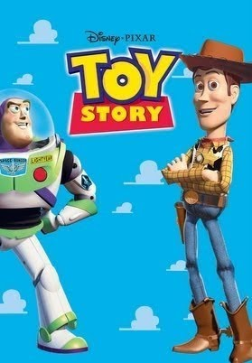

Filmes
| Título | Faixa Etária | Ano | Sinópse | Capa |
|---|---|---|---|---|
| Carros | Livre | 2006 | Ao viajar para a Califórnia, o famoso carro de corridas Relâmpago McQueen se perde e vai parar em Radiator Springs, uma cidadezinha na Rota 66. Ele conhece novos amigos e aprende lições que mudam sua forma de encarar a vida. |
 |
| Toy Story | Livre | 1995 | O aniversário do garoto Andy está chegando e seus brinquedos ficam nervosos, temendo que ele ganhe novos brinquedos que possam substituí-los. Liderados pelo caubói Woody, o brinquedo predileto de Andy, eles recebem Buzz Lightyear, o boneco de um patrulheiro espacial, que logo passa a receber mais atenção do garoto. Com ciúmes, Woody tenta ensiná-lo uma lição, mas Buzz cai pela janela. É o início da aventura do caubói, que precisa resgatar Buzz para limpar sua barra com os outros brinquedos. |
 |
| Minions | Livre | 2015 | Depois de várias parcerias mal sucedidas - que vão desde T. Rex a Napoleão - os MInions se encontram em uma profunda depressão quando percebem que não têm mais a quem servir. Mas um Minion chamado Kevin tem um plano: ao lado do adolescente rebelde Stuart e do pequeno e adorável Bob, ele decide sair pelo mundo à procura de um novo chefe malvado para que seus irmãos tenham a quem servir novamente. O trio embarca, então, em uma emocionante jornada que os levará a conhecer seu novo mestre em potencial, Scarlet Overkill, a primeira supervilã do mundo. Eles viajam da Antártida para Nova York, em 1960, e terminam em Londres, onde terão que enfrentar o maior desafio de suas vidas: salvar todos os Minions... da aniquilação. |
 |